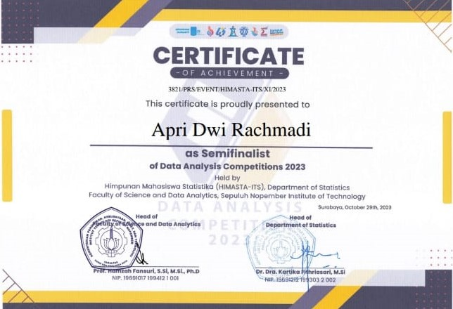
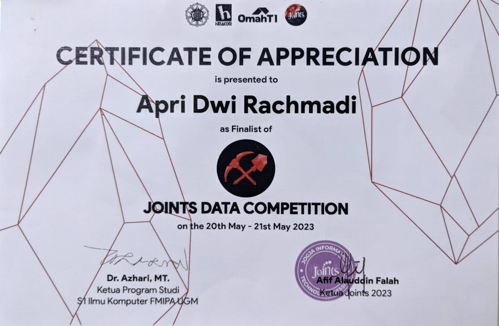
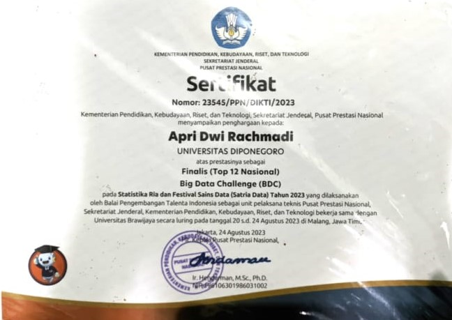
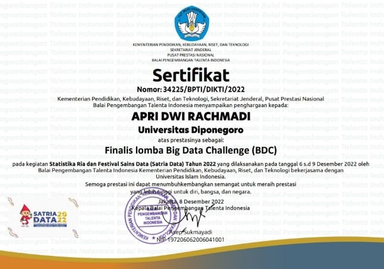
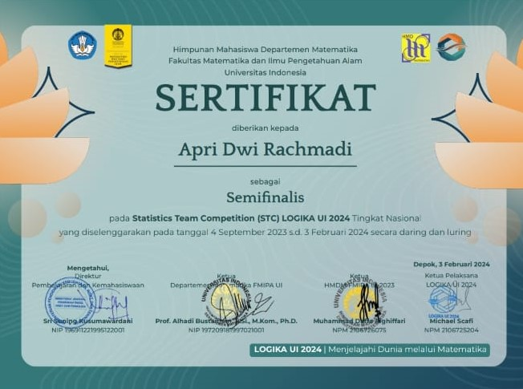

Explore a compilation of my noteworthy achievements, showcasing milestones reached and accomplishments earned throughout my academic and
professional journey. These achievements reflect my commitment to excellence, innovation, and continuous growth.

Top 15 or Semifinalist in ASEAN Data Analysis Competition
Part of Pekan Raya Statistika (PRS) held by Himpunan Mahasiswa Statistika ITS.
Perform data analysis including data preprocessing, visualization,
and building machine learning model using LightGBM Classifier for predicting network attack type with result
of 99.58% f-1 score.

Finalist on Joints Data Mining Competitions
Part of Jogja Information Technology Session held by Himpunan Mahasiswa Ilmu Komputer UGM.
Perform data
classification of Damage Grade Caused by Earthquakes and Image Classification for Early Fire Detection
using Deep Learning

Finalist on Satria Data Big Data Challenge (2023)
Part of Satria Data 2023 held by Pusat Prestasi Nasional (Purpresnas).
Build a license plate recognition model using Transformer Based OCR

Finalist on Satria Data Big Data Challenge (2022)
Part of Satria Data 2022 held by Pusat Prestasi Nasional (Purpresnas).
Perform data analysis of Patient Return Status in BPJS Health Participants and Analysis of Public Opinion
on BPJS Health Services through Twitter social media Using the IndoBERT and BERTopic Algorithms

Semifinalist of Statistics Team Competition (STC) (2024)
Part of Logika UI 2024 held by Himpunan Mahasiswa Departemen Matematika UI.
Perform data analysis including data preprocessing, joining few tables, doing feature engineering to generate more feature,
exploratory data analysis, and building machine learning model to classify credit scoring using machine learning algorithm